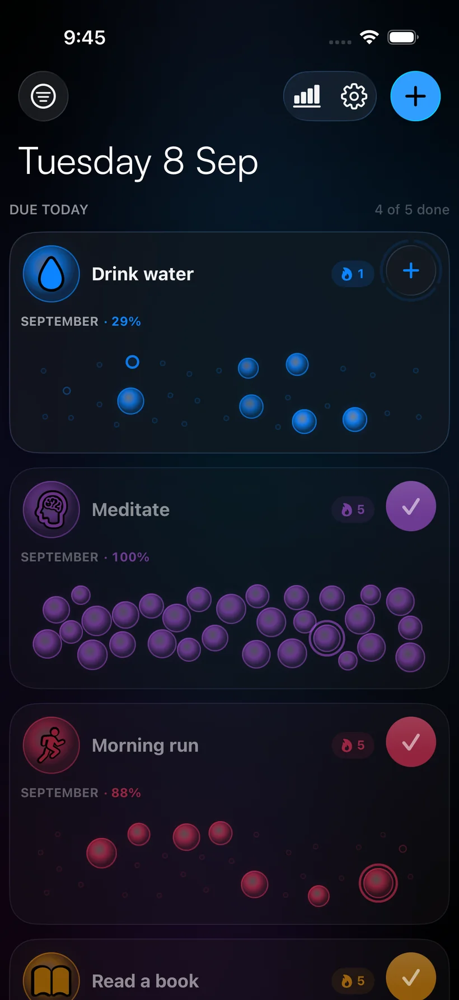

Your habits, as a
constellation.
A habit tracker for iOS 26. One tap fills a bubble, and your data never leaves your phone.
On-deviceNo accountNo analytics

A habit tracker for iOS 26. One tap fills a bubble, and your data never leaves your phone.
